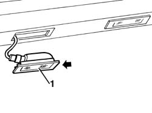
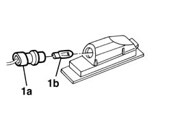

5540A94 L/H OR R/H NUMBER PLATE LIGHT (ONE) - R+R
- Path
- Procedures > 55 ELECTRICAL EQUIPMENT > 5540 EXTERIOR LIGHTING > 5540A LIGHTING > 5540A94 L/H OR R/H NUMBER PLATE LIGHT (ONE) - R+R
- Kind
- repair procedure (removal / refitting; the operation number is the code)
- Applies to
- all engines; all production periods
- Interactive page
- https://sloeber94.github.io/elrnDB-aGt/en/#/125001652
Applies to: all engines; all production periods
 Removing
Removing
 Refitting
Refitting1. Using a screwdriver, release the light cluster working on the side shown in the diagram.

Applies to: all engines; all production periods
1. If necessary, rotate the bulb holder (1a) in an anti-clockwise direction, extract it and remove the bulb (1b) (press fit).

Applies to: all engines; all production periods
Refitting
RemovingCheck that the light cluster and the bulb are not damaged.
If removed, refit the bult and refit the bulb holder.
Fit the light cluster.
Check the operation of the number plate lights.